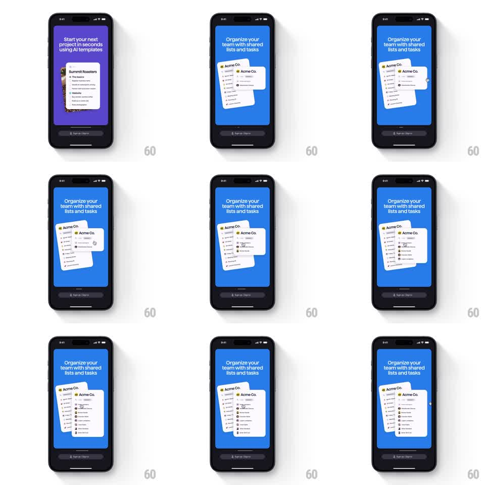

Media
Frame-by-frame

Rebuild this animation 1:1: Superlist's invite onboarding - tapping the invite control on the shared-list card expands it downward, revealing a staggered roster of team members.

Rebuild this animation 1:1: Superlist's invite onboarding - tapping the invite control on the shared-list card expands it downward, revealing a staggered roster of team members. ## Integration Integration: stack-agnostic spec - springs given as stiffness/damping, timed motions as duration + curve; map every value to your framework and animation library of choice. ## Scene Blue panel, headline "Organize your team with shared lists and tasks". Center: two overlapping white "Acme Co." list cards. The front card carries an invite row; on tap it expands to show a member roster: rows of circular avatars with names and roles sliding in one after another. ## Motion spec Pattern: tap-to-expand card with a staggered member reveal. - The front card tilts toward the viewer slightly on touch-down (scale 0.98, 120ms). - On tap, the card expands downward (height spring ~320/26, slight overshoot) and its header row flips to an expanded state (icon rotates 45deg, 200ms). - Member rows stagger in from the top of the new region: each fades and rises 8pt (200ms, 70ms apart), avatar popping a touch (scale 0.8 -> 1, spring ~380/20). - The back card stays put, dimming 10% while the roster is open. ## Calibration - Rows appear in roster order, top to bottom - no random stagger. - The expansion is a single spring; rows ride inside the growing card without clipping. ## Reduced motion Card height snaps; roster fades in as one block (250ms). ## Don't miss - Avatars are real photo circles with thin white rings; names set in the card's list typeface. - The two-card stack never separates - this is one card expanding, not a new panel.